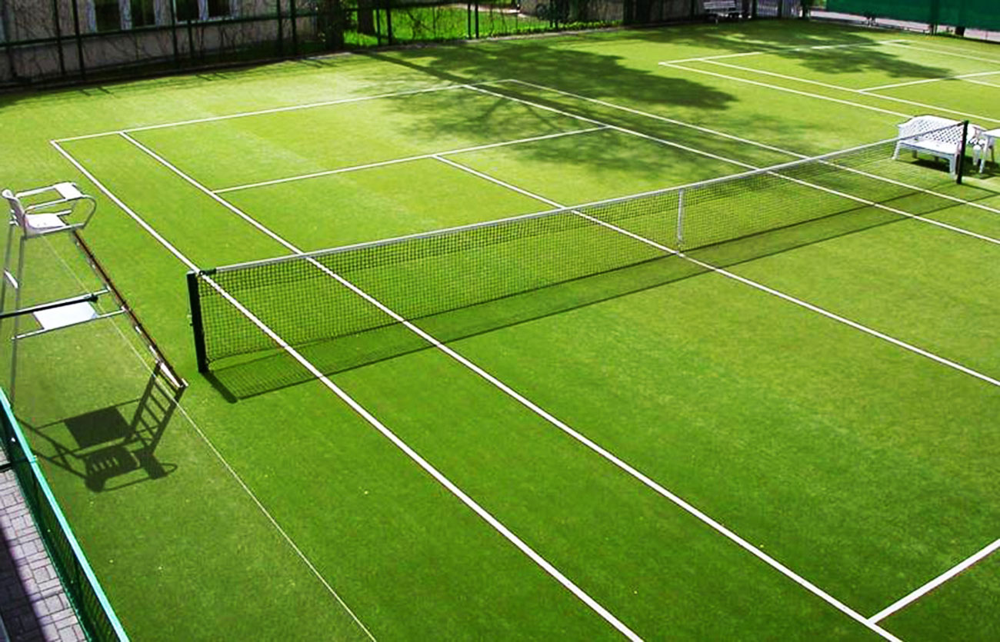
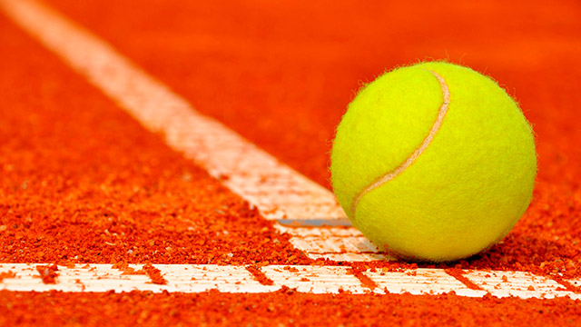
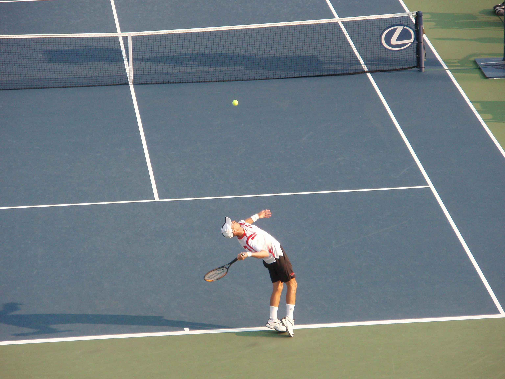
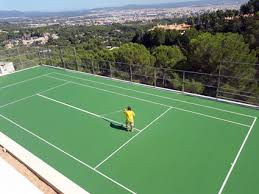

Tipos de canchas
| NOMBRE | DESCRIPCIÓN | IMAGEN |
|---|
| Hierba |
Suele encontrarse en el circuito profesional y cada vez menos extendida, exige un mantenimiento muy caro y constante. |
 |
| NOMBRE | DESCRIPCIÓN | IMAGEN |
|---|
| Tierra batida |
Son casi imposibles de encontrar fuera de terrenos profesionales, el coste es batante elevado y suele ser predominante en España aunque el torneo de tierra batida por exelencia es Roland Garros. |
 |
| NOMBRE | DESCRIPCIÓN | IMAGEN |
|---|
| Pista de tennis dura o de cemento |
Son las más fáciles de encontrar fuera de centros profesionales, son limpias, duraderas y con un mantenimiento bastante barato además evitan irregularidades en la trayectoria de la pelota. |
 |
| NOMBRE | DESCRIPCIÓN | IMAGEN |
|---|
| Pista cubierta sintética,moquetas o pista indoor |
Varian en cuanto a materiales, texturas y grosores, en estas se prohiben disputar partidos profesionales. Se suelen usar para entrenamientos. |
 |